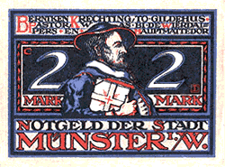

(The Germany History Network)
(Northrhein-Westfalia)

Anabaptists in Münster 1533-1536
(Notgeld, Münster, L891b)
Inhaltsverzeichnis
(Table of Contents)
History
Northrhein-Westfalia, a Brief History
Logo Font; Wittenberg Schwabacher
by the
Walden Font Company
You Are Our Visitor Since 14 October 2004
This Page was Last Updated
 Northrhein-Westfalia, a Brief History
Northrhein-Westfalia, a Brief History